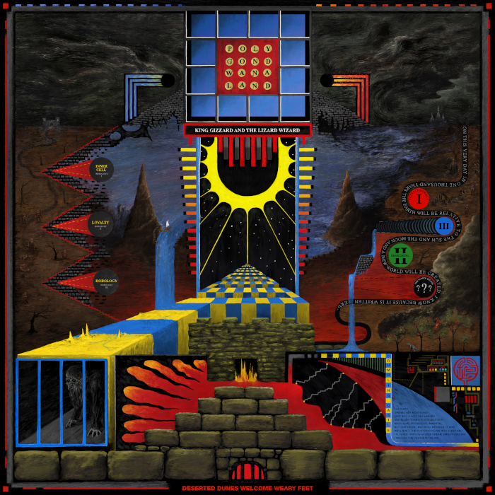

If you know me, you know I really like to listen to music. I have over 120 gigabytes of music stored on my computer, and I have a digital audio player and good earbuds to listen to it with. Most of my music is losslessly compressed 16-bit 44.1 kHz audio. I like to buy my music either at online stores that provide DRM-free downloads, such as HDtracks and the Qobuz store, or physically as CDs, since they contain 16-bit 44.1 kHz lossless audio. I am reasonably content with my setup and it provides enough detail for me to be able to tell apart YouTube-quality music vs CD quality. YouTube of course has acceptable quality, though for music I like, I prefer it lossless.
With that out of the way, here are some of my favorite artists/albums, sorted by genre:
I like every song they have ever released. They have such an awesome style with their music. All of the members are either Armenian immigrants or were born to Armenian immigrants, and I love how it influences not only the sound of their music with the instruments they use on some songs (e.g. mandolins and sitars), but also the subject of their music. Their music is very prominently anti-war, such as with their song Boom!, which is about the war in Iraq. They also criticize the U.S. government and the number of people imprisoned in our country on Prison Song. The only downside to System Of A Down is that the band members are having some trouble in being able to write music together. They all have different visions for their songs, and so they have only released two songs since 2005. Over all, I love their music, and wish they made more.
Another band I really like. Almost every song they have ever released is a song I love. They have a pretty unique visual style, performing in jumpsuits and custom made masks. They have 9 members in their band, so things can get pretty chaotic. The drums in their songs are incredible, and honestly, I just like to listen to the drum tracks on their own sometimes. They are much angrier and heavier than System of a Down with their music, and they delve into some pretty dark topics, such as drug addiction, mental illness, and suicide. Their music videos can also be pretty gruesome. The song The Devil In I is an incredibly good song with just such a music video, which depicts the band members dying in different ways, whether it be by explosion, ripping their face off with their hands, and others. Slipknot, surprisingly enough, is the band that got me into metal in the first place, with their song Psychosocial. I decided one day to try to listen through some metal. Initially, I didn't like any of it, but the melodic singing on sections of this particular song kept me coming back. They are releasing their next studio album on September 20, 2022, and I can't wait for it to come out.
To be completely honest, I sometimes struggle with drawing a line between harder rock and metal. For example, I initially put the following album in the "Metal" section, but after looking it up, it was actually hard rock.
This is the only album by this artist I have listened to. To me, it is basically the perfect album. It is wonderfully energetic and it sounds happy in comparison to Slipknot. I love the distortion they use on their guitar. It sounds so crisp and clean, but not overpoweringly so. I found this album through playing Clone Hero. The song I played was The Free Life, which is probably my favorite song on the album. The rest of the songs are also fantastic in their own right, which makes this a tough choice.
This is probably my second favorite album. It is similarly energetic to the previous entry. Like System of a Down, it incorporates some Armenian influences in its style. The song Viktor actually also has Serj Tankian, lead vocalist for System of a Down, as a guest vocalist. I also found this song through Clone Hero with the song Trans-Siberian Standoff.
I have listened to three albums by this band. The first album I listened to was Nonagon Infinity, which is such a unique album, since all the songs seamlessly transition to each other (not as a YouTube playlist, though), and the album loops perfectly with itself, effectively letting it play infinitely without stopping. It has a weird sound to it, which took a little while to get used to, but I really like it. My favorite song must be Road Train because of the drum rhythm in it, making a sound similar to a train. The next album of theirs I got into was Polygondwanaland, also through the same friend. This song was actually released straight into the public domain, so if you want a copy, you can get one through their bootlegger page. My favorite song is Crumbling Castle. Here is the album art for the album (but greatly downscaled unfortunately), as well as a roughly 2-minute-long, 320 kbps MP3 sample of my favorite part of Crumbling Castle:
The third album of theirs I got into was Fishing for Fishies. This time, I found this album through Clone Hero. I think it was originally intended to be a blues album, but it didn't quite work out. The song I played on clone hero is Boogieman Sam, and it is also my favorite song on the album.
A rather odd song, but something I love. This is the only song by this artist I have listened to a lot. I have heard the rest of the songs on the album this song is from, but nothing stuck out to me.
Daft Punk got me into electronic music because of the TRON: Legacy soundtrack. I love all their albums, with my favorite being Random Access Memories. I really like the texture of the songs there. Another really good album is their live album Alive: 2007. They did a fantastic job remixing their songs. The main issue I have with this album is the mixing of the recording itself. It is louder in one channel, and in my opinion, the bass is turned up too high. Still, I love the remixes, and I wish I could go back in time to see it live.
I got into this album through the same friend who got me into King Gizzard and the Lizard Wizard. I love electronic music as well, and I think Magdalena Bay did a fantastic job with this album. I don't have a favorite song on this album, because I only ever listen to it all the way through without pausing to see the songs. It also has some songs with seamless transitions, and the album loops perfectly with itself, though there are pauses in the music in between, so not continuous quite like Nonagon Infinity.
Not quite what most people think of when they imagine jazz. This duo has a very weird aesthetic, performing in clown masks and in weird locations, such as a portable toilet for their album Toilet. I got into this artist through Clone Hero, specifically their song Truth and Life. Their sound is chaotic, yet so good. Their album Van, recorded in a minivan, employs some rather... unconventional... techniques, such as defacating on a keyboard immediately before playing the song on the rest of their instruments in the song keyboard, or playing the guitar by driving back and forth next to it in the van while one of the band members stuck their penis out of the open door in the song song. A very, very weird duo, but I like their music.
Finally, some more traditional jazz! This is a live performance by the quartet of one of their most famous songs. I'm not as much a fan of the sax playing as on the official release, but the drum solo improvized at around 4:28 is my favorite drum solo of all time, starting out with the song's normal rhythm, then delving into some more complex patterns, all while maintaining the rhythm on the hi-hat, then transitioning into a roll on the snare drum, losing the hi-hat rhythm and building in energy and intensity, until crash! The song's normal drum beat is back! I got into this song because of the History of Jazz class I took.
Another more traditional jazz album. I also got into Charles Mingus through the History of Jazz class. I know there is a stereo version available on YouTube, though I could not find it as easily. I personally prefer the stereo version, as I feel like it adds depth to the music. My favorite song on the album is Wednesday Night Prayer Meeting. I don't know what I can say about it, it's just fantastic. Another close second is Moanin'. I absolutely love the sax playing on it.